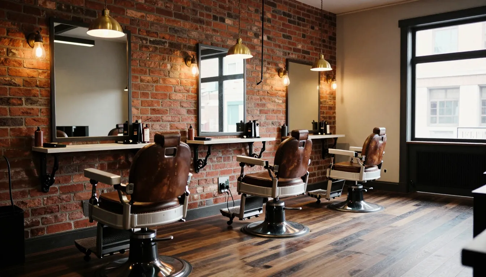
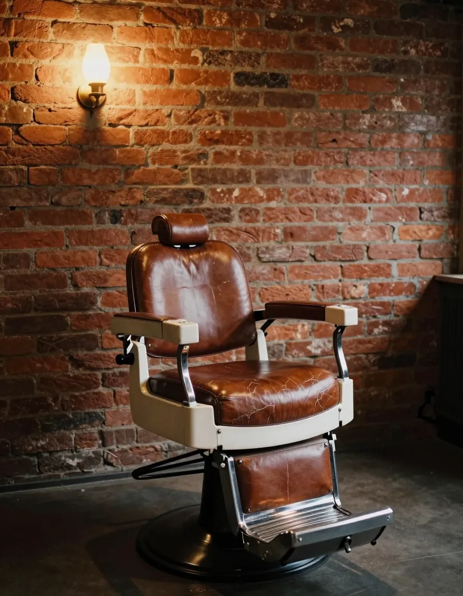
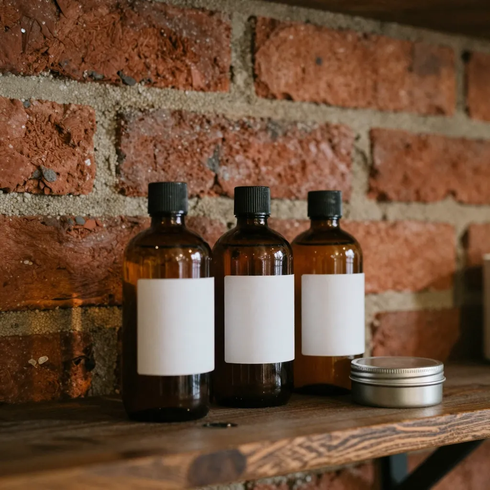
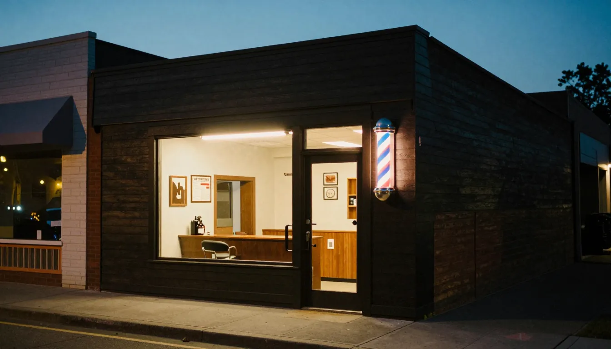

Quatro cadeiras. Nenhuma pressa.
Corte e barba em Pinheiros, feitos por quem trata isso como ofício, não como fila. Você marca com o seu barbeiro e ele te espera.
- Horário
- Segunda a sexta, 10h às 20h
Sábado, 9h às 17h - Endereço
- R. Fradique Coutinho, 000
Pinheiros, São Paulo - Só com hora marcada
- Pelo WhatsApp ou no
(11) 0000-0000


A cadeira do Wagner e as ferramentas dele. Nenhuma é da casa.
Barbeiro é ofício, não linha de produção.
A OFÍCIO é pequena porque escolhemos ser. São quatro cadeiras, um barbeiro fixo em cada uma e uma regra: o corte leva o tempo que precisa levar.
Cada barbeiro daqui trabalha com as próprias ferramentas. Não é kit da casa, é instrumento de quem aprendeu a profissão e continua afiando ela todo dia.
Um dia no salão
Da primeira luz da manhã à vassoura no fim do dia.


O que sai da cadeira.
Cada barra mostra o tempo que a gente reserva pro serviço. Valores a gente passa na hora de marcar.
- Sobrancelha10 min
- Barba na navalha30 min
- Corte35 min
- Tratamento capilar40 min
- Corte + barba60 min
- Pacote Ofício corte, barba e tratamento na mesma cadeira90 min
Quem vai te atender
Você escolhe com quem marca. Na próxima vez é o mesmo, a não ser que você queira trocar.

Diego

Thiago

Marcos
“Troquei de barbearia de rede pra cá. O Wagner lembra até do jeito que eu gosto da barba.”

Leva pra casa o que a gente usa.
Os produtos da bancada são os mesmos que a gente vende. Se funcionou no seu cabelo aqui, funciona em casa.
Antes de marcar.
Se a sua dúvida não estiver aqui, pergunta no WhatsApp. Quem responde é alguém daqui de dentro.
Perguntar no WhatsAppAtende sem hora marcada?
Não. Trabalhamos só com horário marcado pra ninguém esperar em pé. Se quiser tentar um encaixe no mesmo dia, chama no WhatsApp que a gente vê o que dá.
Quanto custa?
A gente passa os valores na hora de marcar, pelo WhatsApp, junto com o horário e o barbeiro. Varia conforme o serviço, então preferimos dizer o valor certo do seu caso.
Quais formas de pagamento?
Pix, débito, crédito e dinheiro.
E se eu atrasar ou precisar desmarcar?
Avisa pelo WhatsApp. Até 15 minutos de atraso a gente segura o horário; passou disso, remarcamos pro próximo horário livre, sem custo.
Tem onde estacionar?
Não temos estacionamento próprio. Na rua de trás costuma ter vaga, e o metrô Fradique Coutinho fica a cinco minutos a pé.
Marca em trinta segundos.
Preenche os campos e a mensagem já vai pronta pro nosso WhatsApp, sem você digitar nada.
A gente responde confirmando o horário. Se preferir ligar, é (11) 0000-0000.

Rua Fradique Coutinho, 000
Pinheiros, São Paulo. Cinco minutos a pé do metrô Fradique Coutinho. Tem onde parar na rua de trás.